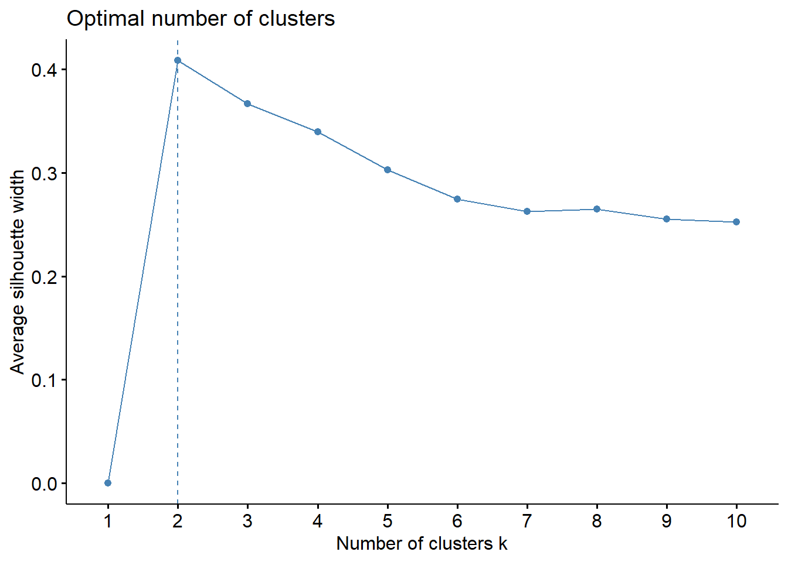

USArrests - Kmeans Clustering
Data Preparation
- Import data
- Inspect the data
- Inspect Structure of data
- Remove irrelevant columns/variables
- Normalize/Standardise Numeric Data
# 1
usa <- read.csv("C:/Users/Alex/Downloads/crime_data.csv")
# 2
summary(usa)## X Murder Assault UrbanPop
## Alabama : 1 Min. : 0.800 Min. : 45.0 Min. :32.00
## Alaska : 1 1st Qu.: 4.075 1st Qu.:109.0 1st Qu.:54.50
## Arizona : 1 Median : 7.250 Median :159.0 Median :66.00
## Arkansas : 1 Mean : 7.788 Mean :170.8 Mean :65.54
## California: 1 3rd Qu.:11.250 3rd Qu.:249.0 3rd Qu.:77.75
## Colorado : 1 Max. :17.400 Max. :337.0 Max. :91.00
## (Other) :44
## Rape
## Min. : 7.30
## 1st Qu.:15.07
## Median :20.10
## Mean :21.23
## 3rd Qu.:26.18
## Max. :46.00
## # 3
str(usa)## 'data.frame': 50 obs. of 5 variables:
## $ X : Factor w/ 50 levels "Alabama","Alaska",..: 1 2 3 4 5 6 7 8 9 10 ...
## $ Murder : num 13.2 10 8.1 8.8 9 7.9 3.3 5.9 15.4 17.4 ...
## $ Assault : int 236 263 294 190 276 204 110 238 335 211 ...
## $ UrbanPop: int 58 48 80 50 91 78 77 72 80 60 ...
## $ Rape : num 21.2 44.5 31 19.5 40.6 38.7 11.1 15.8 31.9 25.8 ...# 4 Converting first columns as row names
row.names(usa) <- usa$X
usa <- usa[-1]
usa_orig <- usa # will be used later
# 5
usa <- scale(usa)
head(usa)## Murder Assault UrbanPop Rape
## Alabama 1.24256408 0.7828393 -0.5209066 -0.003416473
## Alaska 0.50786248 1.1068225 -1.2117642 2.484202941
## Arizona 0.07163341 1.4788032 0.9989801 1.042878388
## Arkansas 0.23234938 0.2308680 -1.0735927 -0.184916602
## California 0.27826823 1.2628144 1.7589234 2.067820292
## Colorado 0.02571456 0.3988593 0.8608085 1.864967207Finding Optimum Clusters
## *** : The Hubert index is a graphical method of determining the number of clusters.
## In the plot of Hubert index, we seek a significant knee that corresponds to a
## significant increase of the value of the measure i.e the significant peak in Hubert
## index second differences plot.
## 
## *** : The D index is a graphical method of determining the number of clusters.
## In the plot of D index, we seek a significant knee (the significant peak in Dindex
## second differences plot) that corresponds to a significant increase of the value of
## the measure.
##
## *******************************************************************
## * Among all indices:
## * 11 proposed 2 as the best number of clusters
## * 2 proposed 3 as the best number of clusters
## * 7 proposed 4 as the best number of clusters
## * 1 proposed 8 as the best number of clusters
## * 1 proposed 9 as the best number of clusters
## * 2 proposed 10 as the best number of clusters
##
## ***** Conclusion *****
##
## * According to the majority rule, the best number of clusters is 2
##
##
## *******************************************************************elbow method
wss<- vector()
for (i in 2:10) wss[i] = sum(kmeans(usa,centers = i, nstart = 25)$withinss)
plot(1:10, wss, type="b", xlab = "Number of clusters k")
axis(side=1, at=c(2:10))
grid(NULL,NULL)Looking at the plot, having 4 clusters as the optimum number of clusters is better as beyond that there isn’t much of a difference between the clusters with k greater than 4
silhouette
fviz_nbclust(usa, kmeans, method = "silhouette")
Silhouette method suggests optimal numbers of clusters to be 2
gap statistics
gap_stat <- clusGap(usa, FUN = kmeans, nstart = 50, K.max = 10, B = 100)
fviz_gap_stat(gap_stat)Gap Statistics suggests having 3 clusters as optimum number of clusters
Kmeans Model
usa_km2 <- kmeans(x = usa, centers = 2, nstart = 25)
usa_km3 <- kmeans(x = usa, centers = 3, nstart = 25)
usa_km4 <- kmeans(x = usa, centers = 4, nstart = 25)
usa_km_compare <- data.frame(
cbind(
rbind(usa_km2$tot.withinss,usa_km2$betweenss),
rbind(usa_km3$tot.withinss,usa_km3$betweenss),
rbind(usa_km4$tot.withinss,usa_km4$betweenss)
),
row.names = c("Tot.withinss (Smaller the better)", "Betweenss (Larger the better)"))
colnames(usa_km_compare) <- c("k(2)", "k(3)", "k(4)")
usa_km_compareModel Comparison
- Cluster plots with k = 2, 3, 4

Silhouette (Si) Analysis
- k = 2
## cluster size ave.sil.width
## 1 1 20 0.37
## 2 2 30 0.43Poorly clustered observations: 0
table(silhouette(usa_km2$cluster, dist = dist(usa))[,3]<0)##
## FALSE
## 50- k = 3
## cluster size ave.sil.width
## 1 1 20 0.26
## 2 2 13 0.37
## 3 3 17 0.32Poorly clustered observation: 1
table(silhouette(usa_km3$cluster, dist = dist(usa))[,3]<0)##
## FALSE TRUE
## 49 1- k = 4
## cluster size ave.sil.width
## 1 1 8 0.39
## 2 2 13 0.37
## 3 3 16 0.34
## 4 4 13 0.27Poorly clustered observation: 1
table(silhouette(usa_km4$cluster, dist = dist(usa))[,3]<0)##
## FALSE TRUE
## 49 1Since all 3 models are somewhat accurate, we need still need to select an optimum number of clusters provided it gives some good information about it.
Correlation
So lets looks at the correlation plot which might further help us out in deciding the optimum number of clusters based on important features that we can lookout for in a cluster.
As we can see:
- there is a high correlation between Assault and Murder
- there is a moderate to low correlation for Assault-Rape and Murder-Rape
Aggregate Values
# k = 2
agg_k2 <- aggregate(USArrests,by=list(usa_km2$cluster),mean)
# k = 3
agg_k3 <- aggregate(USArrests,by=list(usa_km3$cluster),mean)
# k = 4
agg_k4 <- aggregate(USArrests,by=list(usa_km4$cluster),mean)Having k = 2 :
- Eventhough it has a perfect silhouette score, it doesn’t give much of an insight apart from having 2 clusters with one having high crime rate and the other with low crime rates.
Having k = 3 :
- Although it has one observation poorly clustered but looking at the aggregate values for each clusters we can see which cluster has high, moderate and low crime rates makes more sense.
Having k = 4 :
- The model has one observation poorly clustered but having 4 clusters doen’t make any sense when we compare the aggregate values for each clusters.
So we will be going forward with choosing 3 clusters.
Choosing number of clusters also depends on the level of domain knowledge we have, but for this case based on the analysis and logic, we’ll be using k = 3 as it gives us more insight .
Cluster Analysis
With optimum number of clusters selected as 3, we’ll plot a bar plot for feature wise comparison of each cluster.
Barplot
States that fall under each cluster are as follows:
Inference
- States that come under Cluster 1 can be categorised as states where lower crimes are committed.
- States that come under Cluster 2 can be categorised as states where crimes committed are the highest.
- States that come under Cluster 3 can be categorised as states where crimes committed are neither high nor low.
For a family with children who are looking to settle down should consider states with lower crime rates such the ones that fall under Cluster 1.